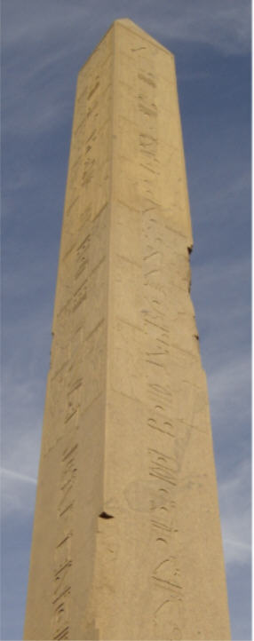
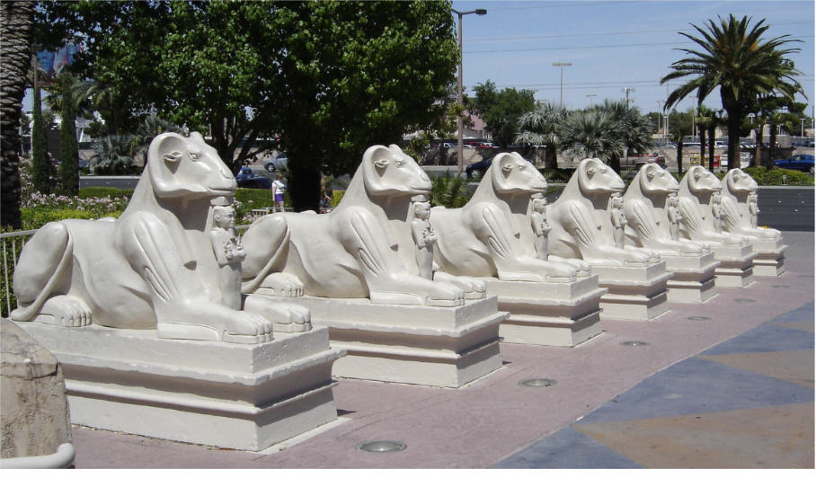
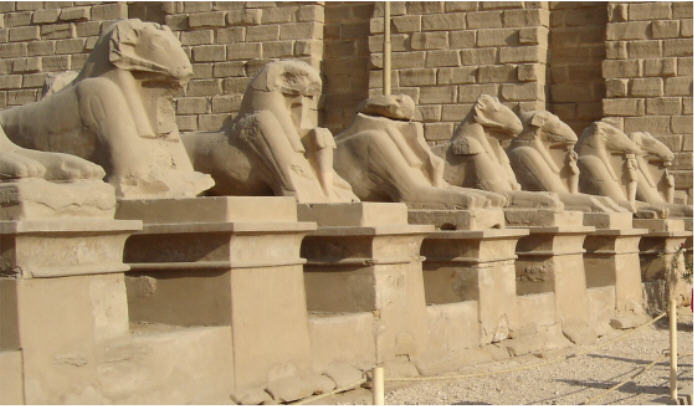

Why Evolution is True
Evolutionists have finally published an explanation of why evolution must be true.
We have often said that the creation/evolution controversy could easily be settled if an evolutionist would simply put forth a reasonable, scientific explanation for how the theory of evolution could possibly be true. That's why we were excited to read this:
|
It had to be done, and Jerry Coyne is unquestionably one of the most qualified people for the job. I am referring to a clear, engaging, accessible explanation of the evidence for evolution, an aspect of the so-called evolution-creation "controversy" that is too often neglected. There are, of course, plenty of books criticizing creationism and its cousin intelligent design as well as works aiming to explain the creationist phenomenon within the broader context of American anti-intellectualism. We can also easily find plenty of superb books for the public about various aspects of evolutionary biology even beyond the classical essays by Stephen Gould and Richard Dawkins. And yet, it is hard to get one's hands on a good non-college-level presentation of why evolution is, as they say, both a theory and a fact. Coyne's Why Evolution Is True begins to fill this obvious lacuna, even though--just like in other branches of science--additional popular writing by scientists and well-informed journalists on evolution will be welcome for many years to come.
The first eight chapters span pretty much everything one may want to know about evolution but, apparently, so few dare to explain.
1
|
Notice that Pigliucci did not say, "Of the many excellent books explaining why the theory of evolution must be true, this is one of the best." No, he implicitly agrees with us when he says, "it is hard to get one's hands on a good non-college-level presentation of why evolution is, as they say, both a theory and a fact." So few dare to explain everything one may want to know about evolution because they can't do it. As it turns out, Coyne can't do it either, but we are getting ahead of ourselves.
We hoped there might be some merit to Coyne's book, but were somewhat skeptical when Pigliucci made this comment about what he thought was the most compelling argument in the book.
|
But it takes a particularly obtuse mind to look at the figure [showing human, Australopithecus afarensis, and chimpanzee] and reject the notions that A. afarensis is a member of the human lineage and that we and chimps have evolved from a common ancestor. [Note:This was written in 2009, before some obtuse evolutionists rejected the idea that A. afarensis is a member of the human lineage.] Then again, there is no dearth of obtuse minds when it comes to creationism.
2
|
A creationist might well say, "But it takes a particularly obtuse mind to look at the complexity of living things and reject the notions that life is the product of conscious design. Then again, there is no dearth of obtuse minds when it comes to evolutionism." But a creationist probably would not say that, because creationists tend to be more polite.
We must question the judgment of anyone who thinks that the statement, "It looks like it must have evolved," is more valid than, "It looks like it must have been created." These are both simply subjective statements--just opinions that reveal bias more than anything else.
Pigliucci goes on to say,
|
The problem with the creation-evolution issue, however, is that it is not about the evidence. The clash is not a scientific debate, it is a social controversy. Coyne understands this, and he begins his last chapter by recounting the story of a public lecture he gave about evolution and intelligent design. ... Coyne admits that the issue goes far beyond science, into philosophy and questions of meaning and morality.
3
|
We will have more to say about this later, but for now we just want to point out that both Pigliucci and Coyne recognize that the debate isn't really about science, and that they think the evidence doesn't really matter.
|
Nonetheless, we must present the evidence, and Jerry Coyne's book does an excellent job of it.
4
|
We think the evidence is all that matters. They rather grudgingly present the evidence because they know the evidence isn't on their side. It is important to note, however, that Pigliucci thinks Coyne does a good job of presenting the evidence.
The editors of the peer-reviewed journal, Nature, said,
|
A GOOD BOOK Jerry Coyne, a staunch opponent of creationism, marshals the arguments in support of evolutionary theory in an accessible yet authoritative book, Why Evolution is True. Particularly strong, says reviewer Eugenie Scott, is the section contrasting transitional and ancestral fossils. A good choice for the teacher who wants to know more about evolutionary biology, says Scott.
5
|
In particular, Scott said,
|
Jerry Coyne, an accomplished population geneticist at the University of Chicago in Illinois, has devoted much time recently to attacking creationism. His articles in popular publications neatly dissect the scientific claims of the creationists, clearly showing their logical and empirical failings. In Why Evolution is True, he shifts his concerns to demonstrate to an open-minded reader the strength of evolutionary biology. The book is one long argument for why the theory so often associated with Charles Darwin should -- as much as any other well-founded scientific explanation -- be recognized as true.
6
|
That sounds nice and unbiased, doesn't it?
|
It remains a dismal truth that in the United States, almost half of the population does not accept the common ancestry of humans and chimpanzees; anti-evolution sentiments are also manifest in the rest of the developed world, albeit less virulently. Coyne's book will be a good choice to give to the neighbour or teacher who wants to know more about evolutionary biology. Lamentably, his book is still needed.
7
|
There is a reason why we are reviewing book reviews. It certainly isn't to show how unbiased Coyne and his reviewers are!  We need to establish the fact that evolutionists have published reviews in respected, peer-reviewed journals saying that Coyne's book is good. Otherwise, you might think we are just tearing apart a book that even evolutionists say is filled with nonsense. No, this is The Great White Hope that evolutionists wish will finally defeat creationism. It's their current champion. It's the best they've got. It is sort of pathetic, in a way.
We need to establish the fact that evolutionists have published reviews in respected, peer-reviewed journals saying that Coyne's book is good. Otherwise, you might think we are just tearing apart a book that even evolutionists say is filled with nonsense. No, this is The Great White Hope that evolutionists wish will finally defeat creationism. It's their current champion. It's the best they've got. It is sort of pathetic, in a way.
This month, we are going to give you an overview of the book, intentionally ignoring the details. Next month we will examine the alleged evidence in favor of evolution presented in the book. But, as has already been stipulated, evidence doesn't matter to evolutionists. They are more concerned with social ramifications, and that's primarily what Coyne's book is about.
The Reason
The title of the book is, "Why Evolution is True," so one might legitimately wonder, "What is the reason evolution must be true?" Suppose you assigned every student in a high school biology class to read this book and, in just one sentence, tell why (according to Coyne) the theory of evolution must be true. That would be an interesting experiment. Here's how we predict nearly every student would answer: "Evolution is true because creationism is false." There might be some other answers, but we can't imagine what they would be.
The first chapter of the book is nothing more than an attack on creationism. The last chapter in the book is nothing more than an attack on creationism. Sprinkled throughout the rest of the book are attacks on the wisdom and capability of an unspecified intelligent designer.
Malice in the First Degree
Why is a book about evolution filled with so much about creationism? We would have to know Coyne's motives, and motives are hard to judge. We would normally hesitate to do that, except for the fact that Coyne himself makes such an issue about motives. The first chapter is devoted to Kitzmiller, et al. v. Dover School District, et al.8 , in which Judge Jones ruled that the motive for criticizing the theory of evolution is nothing more than an attempt to get Christian values into the public school system.
Judges routinely make decisions about motive. "Did the accused kill the victim?" is only part of the decision. It also matters whether the accused killed the victim by accident, or intentionally on the spur of the moment, or planned the crime for months in advance, to determine whether it is third, second, or first degree murder.
Presumably, students in law school learn how to establish motive. It would be an interesting exercise for a law school class to assign two students to argue whether or not Coyne intended his book to be an attack on religions that believe the Genesis account of creation. We pity the student assigned to argue that Coyne had no religious motivation. Coyne clearly wants to protect evolution from the "threat" of religion, and feels he needs to discredit religion to do it.
Other Possibilities
Apparently, in Coyne's mind, there are only two possible alternatives--Biblical Creation and evolution. He never mentions Greek mythology, Norse mythology, Egyptian creation stories, Native American beliefs, or even the Multiverse theory. (There is a "scientific" belief based on quantum physics and superstring theory that there isn't just one universe--there are billions of them. Every time a decision is made, the universe splits into two, each one following a different decision path. So, there is another universe just like ours in which John McCain is president. We were created by whatever quantum physics force causes new universes to pop into existence.)
Coyne never makes the argument that evolution is true because Greek mythology is wrong. We think it is instructive to speculate upon two reasons why he didn't do that.
First, it should be clear to all that proving that Greek mythology is wrong doesn't prove that evolution is right. It is just as true that proving creation is wrong doesn't prove that evolution is right. Therefore, all his attacks on creationism and Intelligent Design have nothing to do with why evolution is true, and have no place in a book with that title.
We have received more emails than we can count saying, "Just because you prove evolution is wrong doesn't prove creation is right." Our answer is, "We agree. But we aren't trying to prove creation is right. We are simply examining the theory of evolution from a purely scientific basis, and find that the evidence is overwhelmingly against it. We don't present, or evaluate, any other competing theory of origins."
So, let's be perfectly clear: Proving evolution wrong does not prove creation is right; and proving creation is wrong doesn't prove evolution is right. This is significant because Coyne devotes a large portion of his book to disproving creationism/Intelligent Design. Therefore, a large portion of his book is logically irrelevant.
The second reason we suspect that Coyne doesn't try to prove Greek mythology is wrong is because he doesn't consider Greek mythology to be a credible explanation for how life began. We are reasonably certain that he doesn't believe that the Norse or Egyptian creation stories are credible explanations, either. He never mentions those creation stories, but he always comes back to Intelligent Design, which he considers to be creationism in disguise. Would he do that if he didn't (at least subconsciously) think Intelligent Design is a credible alternative?
Science Verses Religion
Depending upon what suits their immediate purpose, evolutionists sometimes argue that there is no conflict between religion and science, and other times argue that religion is anti-science. Which is it?
We aren't aware of any ancient Greek scientists (Hippocrates, Euclid, Archimedes, Pythagoras, etc.) who wrote so vehemently against the Greek pantheon of gods. When it comes right down to it, what you think about Zeus has nothing to do with whether or not the sum of the squares of two sides of a right triangle equals the square of its hypotenuse. Belief in Osiris didn't prevent the Egyptians from building remarkable pyramids. Newton's theological works don't negate his laws of motion. In countless cases there is no conflict between science and religion.
There is, however, a fundamental conflict between the theory of evolution and religions that accept the Genesis account of creation. But that isn't really a conflict between science and religion--it is a conflict between the theory of evolution and science, and some religions. Despite what evolutionists would like you to believe, evolution isn't science. The theory of evolution is the creation myth of secular humanism, so the creation/evolution debate is a purely religious debate.
Foolish Egyptology
Since this is April, and we are in an even more light-hearted mood than usual, let us put tongue firmly in cheek and apply Coyne's foolish logic to Egyptology, just to show how foolish it is. Coyne's book is filled with statements like these:
|
It doesn't seem so intelligent to design millions of species that are destined to go extinct, and then replace them with other, similar species, most of which will also vanish.
9
Wouldn't it be odd if a creator helped an ostrich balance itself by giving it appendages that just happened to look exactly like reduced wings, and which are constructed in exactly the same way as wings used for flying?
10
Why would a creator put a pathway for making vitamin C in all these species, and then deactivate it?
11
|
|
We won't bore you with more such statements. It is clear from these examples that one general theme is that an intelligent designer would not have designed something so badly. Let's apply that same logic to Hatshepsut's obelisk.
Please look at the picture. You can see that it isn't perfect. An intelligent designer would have made the sides perfectly straight, without all those broken edges. Furthermore, why would an intelligent designer go to all the trouble to carve it out of granite near Aswan and float it all the way down the Nile to Luxor? Not only that, it is nothing short of miraculous that Egyptians could have stood that obelisk up on end without modern equipment without breaking it. Since it doesn't make sense that Hatshepsut would (or could) have done these things, it must be the result of a natural process, probably erosion.
|

|
The second common theme in Coyne's book is that living things that look similar have similar genes.
|
Only evolution and common ancestry can explain these facts.
12
|
Genetic information, he believes, arises by chance over countless generations. He believes the fact that information appears to be the result of intelligent action is just an illusion. And so it is in the more than fifty caves (erroneously called, "tombs") in the Valley of the Kings. These caves are decorated with similar hieroglyphs, many of which are excerpts from the Egyptian Book of the Dead. If these hieroglyphs had been intentionally painted on the walls of these caves, they would all contain all of the chapters of the Book of the Dead. Furthermore, some of them would not be so faint and incomplete. (But they are not so faint and incomplete that we can't see their common ancestry.) The same hieroglyphs appear in all the caves. Clearly there must be some unknown natural force that causes hieroglyphs to appear on stone surfaces such as these so-called "tombs" and obelisks. Understanding this unknown natural force is essential to all scientific knowledge.
Although Coyne recognizes the difference between evolution and devolution, he apparently doesn't think the difference matters. If a bird loses the ability to fly because of some random mutation, he considers it to be proof that the ability to fly can arise by accident.
|
Consider these ram-headed sphinxes which were built in the early 1990's outside the Luxor Hotel and Casino in Las Vegas, Nevada.
|
Compare them to these ram-headed sphinxes built about 3500 years ago in Luxor, Egypt.
|
|

|

|
3500 years ago the Egyptian sphinxes might have looked just like the Las Vegas sphinxes do today. 3500 years from now, it is entirely possible that the Las Vegas sphinxes will be in as bad shape as the Egyptian sphinxes are today. No reasonable scientist would predict that the natural forces that have caused the Egyptian sphinxes to devolve will cause them to evolve back to pristine condition in another 3500 years.
Natural forces do cause things to fall apart, and information to be lost. But that doesn't prove that natural forces cause things to fall together in useful ways, and for information to spontaneously appear.
Back to Reality
Coyne tries to prove evolution is true by proving that creation is false. He does this primarily by misrepresenting the creationist position.
Creationists don't believe that species never change. Creationists believe that species do devolve. Chickens might very well have been able to fly at some time in the past. Mutations might have taken that ability away from them, and natural selection might not have been a sufficiently conservative force to cause all the mutant flightless chickens to die off. Despite what Coyne would have you believe, creationists do believe that birds can lose the ability to fly, fish can lose the ability to see, and species may change in other ways.
What creationists don't believe is that species can turn into entirely different species. Creationists don't believe that the ability to fly or see can arise by accident.
Creationists also believe that the human appendix might have once served a more useful purpose than it does now. It is fundamental to their position that life on Earth now is not nearly as perfect as when it was first created. So, pointing out imperfections in existing species has nothing to do with the perfection of originally created species.
But don't take our word for it. Go to the library and check out Why Evolution is True by Jerry Coyne (don't waste your money buying it ) and buy a copy of By Design by Dr. Jonathan Sarfati. In particular, read chapters 12 ("What about 'poorly designed' things") and 13 ("Why are there 'bad things' in nature") in Sarfati's book, and compare what he says to what Coyne says in chapter 3 ("Remnants: Vestiges, Embryos, and Bad Design") of his book. If you do, you will see why evolutionists are so desperate to keep people from reading anything written by creationists or Intelligent Design advocates. If people know what creationists really say, then they won't believe the evolutionists' lies about creationism.
We've written more than we like about creationism, but that's because that's what most of Coyne's book is about. We feel somewhat uncomfortable trying to present the creationists' position for them. If you are interested in what creationists believe, there are plenty of creationists who would be glad to tell you.
Our only point is that Coyne's book contains very little science, and a lot of lies about creationism. Since so much of the book is an attack on creationism, we can't really review it without addressing the subject.
We wouldn't waste our time (or yours) on this book if evolutionists didn't consider it to be "a clear, engaging, accessible explanation of the evidence for evolution." Next month we will have a good laugh at Coyne's pathetic "scientific" evidence for evolution, even though April Fool's Day is over.
Footnotes:
1
Massimo Pigliucci, Science, 5 February 2009, "EVOLUTION: The Overwhelming Evidence", page 716 https://www.science.org/doi/10.1126/science.1168718
2
ibid.
3
ibid.
4
ibid.
5
Nature, 5 March 2009, "This Issue", page 4
6
Eugenie Scott, Nature, 5 March 2009, "Primed for evolution", page 34 https://www.nature.com/articles/458034a
7
ibid.
8
http://www.pamd.uscourts.gov/kitzmiller/docket.htm
9
Coyne, Why Evolution is True, 2009, page 12
10
ibid., page 58
11
ibid., page 69
12
ibid., page 68